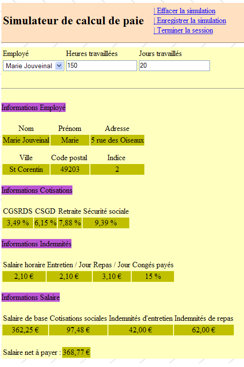
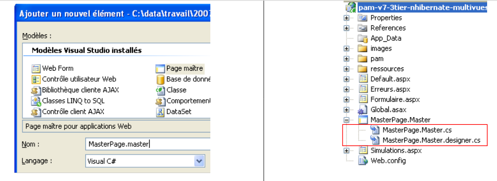
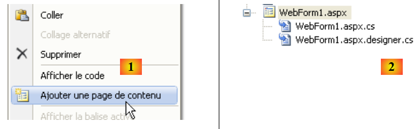
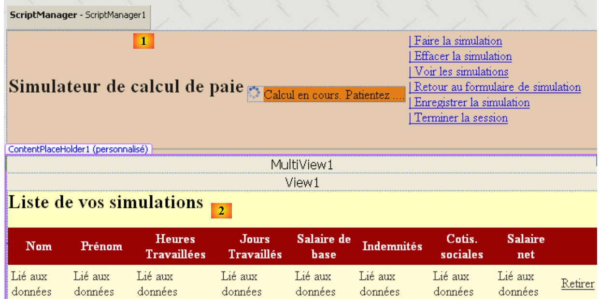
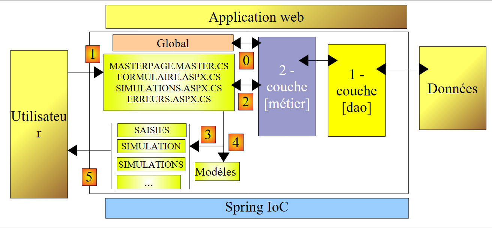

11. De applicatie [SimuPaie] – versie 7 – ASP.NET / meerdere weergaven / meerdere pagina’s
Aanbevolen lectuur: referentie [1], Ontwikkeling WEB met ASP.NET 1.1 paragraaf: Voorbeelden
We bekijken nu een versie die functioneel identiek is aan de eerder besproken drielaagse toepassing ASP.NET ([pam-v4-3tier-nhibernate-multivues-monopage]), maar we passen de architectuur ervan als volgt aan: waar in de vorige versie de weergaven werden geïmplementeerd door één enkele pagina ASPX, worden ze hier geïmplementeerd door drie pagina's ASPX.
De architectuur van de vorige applicatie was als volgt:
 |
Hier hebben we een MVC-architectuur (Model – View – Controller):
- [Default.aspx.cs] bevat de code van de controller. De pagina [Default.aspx] is het enige contactpunt met de client. Alle verzoeken van de client komen hier langs.
- [Saisies, Simulation, Simulations, ...] zijn de weergaven. Deze weergaven worden hier geïmplementeerd door middel van [View]-componenten van de pagina [Default.aspx].
De architectuur van de nieuwe versie zal als volgt zijn:
 |
- alleen de laag [web] verandert
- de weergaven (wat aan de gebruiker wordt getoond) blijven ongewijzigd.
- De controllercode, die in de vorige versie volledig in [Default.aspx.cs] stond, is nu verdeeld over meerdere pagina's:
- [MasterPage.master]: een pagina die de gemeenschappelijke elementen van de verschillende weergaven samenvat: de bovenste balk met de menuopties
- [Formulaire.aspx]: de pagina die het simulatieformulier weergeeft en de acties beheert die op dit formulier plaatsvinden
- [Simulations.aspx]: de pagina waarop de lijst met simulaties wordt weergegeven en waarop de acties worden beheerd die op deze pagina plaatsvinden
- [Erreurs.aspx]: de pagina die wordt weergegeven wanneer er een fout optreedt bij het opstarten van de applicatie. Op deze pagina zijn geen acties mogelijk.
We kunnen stellen dat we hier te maken hebben met een MVC-architectuur met meerdere controllers, terwijl de architectuur van de vorige versie een MVC-architectuur met één controller was.
De verwerking van een verzoek van een klant verloopt volgens de volgende stappen:
- de klant doet een verzoek aan de applicatie. Hij doet dit via een van de twee [Formulaire.aspx, Simulations.aspx]-pagina's.
- De opgevraagde pagina verwerkt dit verzoek. Hiervoor kan de pagina de hulp nodig hebben van de laag [métier], die op haar beurt de laag [dao] nodig kan hebben als er gegevens met de database moeten worden uitgewisseld. De applicatie ontvangt een antwoord van de laag [métier].
- Op basis daarvan kiest de applicatie (3) de weergave (= het antwoord) die naar de klant moet worden verzonden en voorziet deze (4) van de informatie (het model) die de klant nodig heeft.
- Het antwoord wordt naar de klant verzonden (5)
11.1. De weergaven van de applicatie
De verschillende weergaven die aan de gebruiker worden getoond, zijn de volgende:
- - de weergave [VueSaisies], die het simulatieformulier toont

- - de weergave [VueSimulation] die wordt gebruikt om het gedetailleerde resultaat van de simulatie weer te geven:

- - de weergave [VueSimulations], die de lijst met door de klant uitgevoerde simulaties weergeeft

- - de weergave [VueSimulationsVides], die aangeeft dat de klant geen of geen simulaties meer heeft:

- de weergave [VueErreurs] die een initialisatiefout van de applicatie aangeeft:

11.2. Genereren van weergaven in een omgeving met meerdere controllers
In de vorige versie werden alle weergaven gegenereerd vanuit de enige pagina [Default.aspx]. Deze bevatte twee componenten [MultiView] en de weergaven bestonden uit een combinatie van één of twee componenten [View] die tot deze twee componenten [MultiView] behoorden.
Deze architectuur is efficiënt wanneer er weinig weergaven zijn, maar stuit op haar grenzen zodra het aantal componenten waaruit de verschillende weergaven bestaan groot wordt: bij elk verzoek dat aan de enige pagina [Default.aspx] wordt gedaan, worden namelijk alle componenten daarvan geïnstantieerd, terwijl slechts enkele daarvan worden gebruikt om het antwoord aan de gebruiker te genereren. Bij elke nieuwe aanvraag wordt dus onnodig werk verricht, wat nadelig uitpakt wanneer het totale aantal componenten op de pagina groot is.
Een oplossing is dan om de weergaven over verschillende pagina’s te verdelen. Dat is wat we hier doen. Laten we twee verschillende gevallen van het genereren van weergaven bekijken:
- het verzoek wordt gedaan aan een pagina P1 en deze genereert het antwoord
- er wordt een verzoek gedaan aan een pagina P1 en deze vraagt een pagina P2 om het antwoord te genereren
11.2.1. Geval 1: één controller/weergave
In geval 1 komen we terug bij de architectuur met één controller uit de vorige versie, waarbij de pagina [Default.aspx] de pagina P1 is:
 |
- de client doet een verzoek aan de pagina P1 (1)
- de pagina P1 verwerkt dit verzoek. Hiervoor kan zij de hulp nodig hebben van de laag [métier] (2), die op haar beurt de laag [dao] nodig kan hebben als er gegevens met de database moeten worden uitgewisseld. De applicatie ontvangt een antwoord van de laag [métier].
- Op basis daarvan kiest ze (3) de weergave (= het antwoord) die naar de klant moet worden verzonden en voorziet ze deze (4) van de informatie (het model) die ze nodig heeft. Het gaat er hier om op de pagina P1 de componenten [Panel] of [View] te selecteren die moeten worden weergegeven en de componenten die deze bevatten te initialiseren.
- Het antwoord wordt naar de client verzonden (5)
Hier volgen twee voorbeelden uit de onderzochte applicatie:
[page Formulaire.aspx]
 |
- in [1]: nadat de gebruiker de pagina [Formulaire.aspx] heeft opgevraagd, vraagt hij een simulatie aan
- in [2]: de pagina [Formulaire.aspx] heeft dit verzoek verwerkt en zelf het antwoord gegenereerd door een component [View] weer te geven die niet was weergegeven in [1]
[page Simulations.aspx]
 |
- in [1]: de gebruiker wil, na de pagina [Simulations.aspx] te hebben opgevraagd, een simulatie verwijderen
- in [2]: de pagina [Simulations.aspx] heeft dit verzoek verwerkt en zelf het antwoord gegenereerd door de nieuwe lijst met simulaties opnieuw weer te geven.
2  |
11.2.2. Geval 2: één pagina met één controller, één pagina met twee controllers / weergaven
Geval 2 kan verschillende architecturen omvatten. We kiezen de volgende:
 |
- de client doet een verzoek aan pagina P1 (1)
- pagina P1 verwerkt dit verzoek. Hiervoor kan zij de hulp nodig hebben van de laag [métier] (2), die op haar beurt de laag [dao] nodig kan hebben als er gegevens met de database moeten worden uitgewisseld. De applicatie ontvangt een antwoord van de laag [métier].
- Op basis daarvan kiest ze (3) de weergave (= het antwoord) die naar de klant moet worden verzonden en voorziet ze deze (4) van de informatie (het model) die hij nodig heeft. Het blijkt dat de te genereren weergave hier niet door de pagina P1 moet worden gegenereerd, maar door een andere pagina, namelijk de pagina P2. Om de bewerkingen (3) en (4) uit te voeren, heeft de pagina P1 twee mogelijkheden:
- een uitvoeroverdracht uitvoeren naar de pagina P2 via de bewerking [Server.Transfer(" P2.aspx ")]. In dat geval kan het sjabloon voor de pagina P2 in de context van de aanvraag [Context.Items[" clé "]=valeur] of in de sessie van de gebruiker [Session.[" clé "]=valeur]. De pagina P2 wordt dan geïnstantieerd en bij de verwerking van bijvoorbeeld de gebeurtenis Load kan deze de informatie ophalen die door de pagina P1 is doorgegeven via de bewerkingen [valeur=(Type)Context.Items[" clé "]] of [valeur=(Type)Session[" clé "]], afhankelijk van het geval, waarbij Type het type is van de waarde die aan de sleutel is gekoppeld. Het doorgeven van waarden via de context Context is het meest geschikt als het niet nodig is dat de waarden van het model worden bewaard voor een toekomstige aanvraag van de klant.
- de klant vragen om via de bewerking [Response.Redirect(" P2.aspx ")] door te sturen naar de pagina P2. In dit geval zal de pagina P1 het sjabloon voor de pagina P2 in de sessie plaatsen, omdat de verzoekcontext Context aan het einde van elk verzoek wordt verwijderd. Maar hier zal de omleiding ervoor zorgen dat het eerste verzoek van de klant naar P1 wordt beëindigd en dat er een tweede verzoek van dezelfde klant wordt verzonden, ditmaal naar P2. Er zijn twee opeenvolgende verzoeken. We weten dat de sessie een van de manieren is om „geheugen“ tussen verzoeken te behouden. Er zijn andere oplossingen dan de sessie.
- Hoe P2 ook het stokje overneemt, we komen vervolgens weer terug bij geval 1: P2 heeft een verzoek ontvangen dat zij gaat verwerken (5) en zij zal zelf het antwoord genereren (6, 7). We kunnen ons ook voorstellen dat de pagina P2 na verwerking van het verzoek het stokje doorgeeft aan een pagina P3, enzovoort.
Hier volgt een voorbeeld uit de onderzochte applicatie:
 |
- naar [1]: de gebruiker die de pagina [Formulaire.aspx] heeft opgevraagd, vraagt om de lijst met simulaties
- in [2]: de pagina [Formulaire.aspx] verwerkt dit verzoek en leidt de client om naar de pagina [Simulations.aspx]. Het is deze laatste die het antwoord aan de gebruiker verstrekt. In plaats van de klant te vragen om door te gaan, had de pagina [Formulaire.aspx] het verzoek van de klant kunnen doorsturen naar de pagina [Simulations.aspx]. In dat geval zou op [2] dezelfde URL te zien zijn geweest als op [1]. Een browser geeft namelijk altijd de laatst opgevraagde URL weer:
- de actie die op [1] wordt aangevraagd, is bestemd voor de pagina [Formulaire.aspx]. De browser voert een POST uit naar deze pagina.
- Als de pagina [Formulaire.aspx] het verzoek verwerkt en vervolgens via [Server.Transfer(" Simulations.aspx ")] doorstuurt naar de pagina [Simulations.aspx], blijft men binnen hetzelfde verzoek. De browser zal dan in [2] de URL weergeven van [Formulaire.aspx], waarnaar de POST heeft plaatsgevonden.
- Als de pagina [Formulaire.aspx] het verzoek verwerkt en vervolgens via [Response.Redirect(" Simulations.aspx ")] doorverwijst naar de pagina [Simulations.aspx], dan doet de browser een tweede verzoek, een GET naar [Simulations.aspx]. De browser zal vervolgens op [2] de URL weergeven van [Simulations.aspx], waarnaar de GET plaatsvond. Dat is wat de bovenstaande schermafbeelding [2] ons laat zien.
11.3. Het Visual Web Developer-project van de laag [web]
Het Visual Web Developer-project van de laag [web] is als volgt:
 |
- in [1] vinden we:
- het configuratiebestand [Web.config] van de applicatie – is identiek aan dat van de applicatie [pam-v4-3tier-nhibernate-multivues-monopage].
- de pagina [Default.aspx] – leidt de klant alleen maar door naar de pagina [Formulaire.aspx]
- de pagina [Formulaire.aspx], die de gebruiker het simulatieformulier toont en de acties met betrekking tot dit formulier verwerkt
- de pagina [Simulations.aspx], die de gebruiker de lijst met zijn simulaties toont en de acties verwerkt die verband houden met deze pagina
- de pagina [Erreurs.aspx], die de gebruiker een pagina toont waarin een fout wordt gemeld die is opgetreden bij het opstarten van de webapplicatie.
- Op [2] zijn de projectreferenties te zien.
Laten we terugkeren naar de architectuur van het nieuwe project:
 |
Ten opzichte van het project [pam-v4-3tier-nhibernate-multivues-monopage] zijn alleen de weergaven gewijzigd. Het nieuwe project neemt dus een aantal bestanden van dit project over:
- het configuratiebestand [Web.config]
- de bestanden DLL die verwijzen naar [pam-dao-nhibernate, pam-metier-dao-nhibernate, Spring.Core, NHibernate]
- de globale applicatieklasse [Global.asax]
- de mappen [images, ressources, pam]
Om consistent te blijven met het project dat momenteel in ontwikkeling is, zorgen we ervoor dat de naamruimte van de weergaven en de globale applicatieklasse [pam-v7] is:
 |
11.4. De code voor de weergave van de pagina's
11.4.1. De masterpagina [MasterPage.master]
De weergaven van de applicatie die in paragraaf 11.1 worden gepresenteerd, hebben gemeenschappelijke onderdelen die kunnen worden samengevoegd in een masterpagina, in Visual Studio de ‘Master Page’ genoemd. Laten we bijvoorbeeld de onderstaande weergaven [VueSaisies] en [VueSimulationsVides] nemen, die respectievelijk zijn gegenereerd door de pagina’s [Formulaire.aspx] en [Simulations.aspx]:
 |
Deze twee weergaven hebben de bovenste balk (titel en menuopties) gemeen. Dit geldt voor alle weergaven die aan de gebruiker worden getoond: ze hebben allemaal dezelfde bovenste balk. Om ervoor te zorgen dat verschillende pagina’s hetzelfde weergavefragment delen, zijn er diverse oplossingen, waaronder de volgende:
- dit gemeenschappelijke fragment in een gebruikerscomponent plaatsen. Dit was de belangrijkste techniek bij ASP.NET 1.1
- dit gemeenschappelijke fragment in een masterpagina plaatsen. Deze techniek is geïntroduceerd met ASP.NET 2.0. Dit is de techniek die we hier gebruiken.
Om een masterpagina in een webapplicatie aan te maken, kunt u als volgt te werk gaan:
- rechtsklikken op het project / Een nieuw element toevoegen / Masterpagina:
 |
Door een masterpagina toe te voegen, worden standaard drie bestanden aan de webapplicatie toegevoegd:
- [MasterPage.master]: de opmaakcode van de masterpagina
- [MasterPage.master.cs]: de besturingscode van de masterpagina
- [Masterpage.Master.designer.cs]: de declaratie van de componenten van de masterpagina
De door Visual Studio gegenereerde code in [MasterPage.master] is als volgt:
<%@ Master Language="C#" AutoEventWireup="true" CodeBehind="MasterPage.master.cs" Inherits="pam_v7.MasterPage" %>
<!DOCTYPE html PUBLIC "-//W3C//DTD XHTML 1.0 Transitional//EN" "http://www.w3.org/TR/xhtml1/DTD/xhtml1-transitional.dtd">
<html xmlns="http://www.w3.org/1999/xhtml">
<head runat="server">
<title>Untitled Page</title>
<asp:ContentPlaceHolder id="head" runat="server">
</asp:ContentPlaceHolder>
</head>
<body>
<form id="form1" runat="server">
<div>
<asp:ContentPlaceHolder id="ContentPlaceHolder1" runat="server">
</asp:ContentPlaceHolder>
</div>
</form>
</body>
</html>
- regel 1: de tag <%@ Master ... %> wordt gebruikt om de pagina als een masterpagina te definiëren. De besturingscode van de pagina staat in het bestand dat is gedefinieerd door het attribuut CodeBehind, en de pagina erft de klasse die is gedefinieerd door het attribuut Inherits.
- regels 12-18: het formulier van de masterpagina
- regels 14-16: een lege container die in onze toepassing een van de pagina’s [Formulaire.aspx, Simulations.aspx, Erreurs.aspx] zal bevatten. De klant ontvangt als antwoord altijd dezelfde pagina, de Master-pagina, waarin de container [ContentPlaceHolder1] een feed HTML zal ontvangen die wordt aangeleverd door een van de pagina’s [Formulaire.aspx, Simulations.aspx, Erreurs.aspx]. Om het uiterlijk van de naar de clients verzonden pagina’s te wijzigen, volstaat het dus om het uiterlijk van de Master-pagina aan te passen.
- regels 8-9: een lege container waarmee de „dochterpagina’s” de koptekst <head>...</head> kunnen aanpassen.
De visuele weergave (tabblad Ontwerp) van deze broncode wordt hieronder weergegeven in (1). Bovendien is het mogelijk om zoveel containers toe te voegen als gewenst, dankzij de component [ContentPlaceHolder] (2) van de werkbalk [Standard].
 |
De door Visual Studio gegenereerde besturingscode in [MasterPage.master.cs] is als volgt:
using System;
public partial class MasterPage : System.Web.UI.MasterPage
{
protected void Page_Load(object sender, EventArgs e)
{
}
}
- regel 3: de klasse waarnaar wordt verwezen door het attribuut [Inherits] van de richtlijn <%@ Master ... %> op de pagina [MasterPage.master] is afgeleid van de klasse [System.Web.UI.MasterPage]
Hierboven zien we de aanwezigheid van de methode Page_Load die de gebeurtenis Load van de masterpagina afhandelt. De masterpagina bevat op haar beurt weer een andere pagina. In welke volgorde vinden de gebeurtenissen Load van de twee pagina’s plaats? Dit is een algemene regel: de gebeurtenis Load van een component vindt plaats vóór die van de bijbehorende container. In dit geval zal de gebeurtenis Load van de pagina die in de hoofdpagina is ingevoegd, dus plaatsvinden vóór die van de hoofdpagina zelf.
Om met een pagina te genereren waarvan de vorige pagina [MasterPage.master] de masterpagina is, kunt u als volgt te werk gaan:
 |
- in [1]: klik met de rechtermuisknop op de masterpagina en kies vervolgens de optie [Ajouter une page de contenu]
- in [2]: er wordt een standaardpagina gegenereerd, in dit geval [WebForm1.aspx].
De opmaakcode [WebForm1.aspx] is als volgt:
<%@ Page Title="" Language="C#" MasterPageFile="~/MasterPage.Master" AutoEventWireup="true" CodeBehind="WebForm1.aspx.cs" Inherits="pam_v7.WebForm1" %>
<asp:Content ID="Content1" ContentPlaceHolderID="ContentPlaceHolder1" runat="server">
</asp:Content>
- regel 1: de Page-richtlijn en de bijbehorende attributen
- MasterPageFile: verwijst naar het masterpaginabestand van de pagina die door de richtlijn wordt beschreven. Het teken ~ verwijst naar de projectmap.
- De overige parameters zijn de gebruikelijke parameters van een webpagina ASP
- regels 2-3: de tags <asp:Content> worden één voor één gekoppeld aan de richtlijnen <asp:ContentPlaceHolder> van de masterpagina via het attribuut ContentPlaceHolderID. De componenten die tussen de bovenstaande regels 2-3 staan, worden tijdens de uitvoering in de container van ID ContentPlaceHolder1 van de masterpagina geplaatst.
Door de aldus gegenereerde pagina [WebForm1.aspx] te hernoemen, kunnen de verschillende pagina’s worden opgebouwd met [MasterPage.master] als masterpagina.
Voor onze toepassing [SimuPaie] ziet de masterpagina er als volgt uit:
 |
Nr. | Type | Naam | Rol |
Paneel (roze hierboven) | koptekst | paginakop | |
Paneel (hierboven geel) | inhoud | pagina-inhoud | |
LinkButton | LinkButtonFaireSimulation | vraag de simulatie te berekenen | |
LinkButton | LinkButtonEffacerSimulation | wist het invoerformulier | |
LinkButton | LinkButtonVoirSimulations | toont de lijst met reeds uitgevoerde simulaties | |
LinkButton | LinkButtonFormulaireSimulation | gaat terug naar het invoerformulier | |
LinkButton | LinkButtonEnregistrerSimulation | slaat de huidige simulatie op in de lijst met simulaties | |
LinkButton | LinkButtonTerminerSession | beëindigt de huidige sessie |
De bijbehorende broncode is als volgt:
<%@ Master Language="C#" AutoEventWireup="true" CodeBehind="MasterPage.master.cs" Inherits="pam_v7.MasterPage" %>
<!DOCTYPE html PUBLIC "-//W3C//DTD XHTML 1.0 Transitional//EN" "http://www.w3.org/TR/xhtml1/DTD/xhtml1-transitional.dtd">
<html xmlns="http://www.w3.org/1999/xhtml">
<head id="Head1" runat="server">
<title>Application PAM</title>
</head>
<body background="ressources/standard.jpg">
<form id="form1" runat="server">
<asp:ScriptManager ID="ScriptManager1" runat="server" EnablePartialRendering="true" />
<asp:UpdatePanel runat="server" ID="UpdatePanelPam" UpdateMode="Conditional">
<ContentTemplate>
<asp:Panel ID="entete" runat="server" BackColor="#FFE0C0">
<table>
<tr>
<td>
<h2>
Simulateur de calcul de paie</h2>
</td>
<td>
<label>
 </label>
<asp:UpdateProgress ID="UpdateProgress1" runat="server">
<ProgressTemplate>
<img alt="" src="images/indicator.gif" />
<asp:Label ID="Label5" runat="server" BackColor="#FF8000"
EnableViewState="False" Text="Calcul en cours. Patientez ....">
</asp:Label>
</ProgressTemplate>
</asp:UpdateProgress>
</td>
<td>
<asp:LinkButton ID="LinkButtonFaireSimulation" runat="server"
CausesValidation="False">| Faire la simulation<br />
</asp:LinkButton>
<asp:LinkButton ID="LinkButtonEffacerSimulation" runat="server"
CausesValidation="False">| Effacer la simulation<br />
</asp:LinkButton>
<asp:LinkButton ID="LinkButtonVoirSimulations" runat="server"
CausesValidation="False">| Voir les simulations<br />
</asp:LinkButton>
<asp:LinkButton ID="LinkButtonFormulaireSimulation" runat="server"
CausesValidation="False">| Retour au formulaire de simulation<br />
</asp:LinkButton>
<asp:LinkButton ID="LinkButtonEnregistrerSimulation" runat="server"
CausesValidation="False">| Enregistrer la simulation<br />
</asp:LinkButton>
<asp:LinkButton ID="LinkButtonTerminerSession" runat="server"
CausesValidation="False">| Terminer la session<br />
</asp:LinkButton>
</td>
</tr>
</table>
<hr />
</asp:Panel>
<div>
<asp:Panel ID="contenu" runat="server" BackColor="#FFFFC0">
<asp:ContentPlaceHolder ID="ContentPlaceHolder1" runat="server">
</asp:ContentPlaceHolder>
</asp:Panel>
</div>
</ContentTemplate>
</asp:UpdatePanel>
</form>
</body>
</html>
- regel 1: let op de naam van de masterpagina: MasterPage
- regel 8: er wordt een achtergrondafbeelding voor de pagina gedefinieerd.
- regels 9-64: het formulier
- regel 10: de component ScriptManager die nodig is voor de Ajax-effecten
- regels 11-63: de container AJax
- regels 12-62: de inhoud met Ajax-functionaliteit
- regels 13-55: de Panel-component [entete]
- regels 57-60: de Panel-component [contenu]
- regels 58-59: de component ID [ContentPlaceHolder1] die de ingekapselde pagina [Formulaire.aspx, Simulations.aspx, Erreurs.aspx] zal bevatten
Om deze pagina te bouwen, kunnen we in het paneel [entete] de code ASPX uit de weergave [VueEntete] van de pagina [Default.aspx] van de versie [pam-v4-3tier-nhibernate-multivues-monopage], zoals beschreven in paragraaf 8.5.2.
11.4.2. De pagina [Formulaire.aspx]
Om deze pagina te genereren, volgt men de methode zoals beschreven in paragraaf 11.4.1 en hernoemt men de aldus gegenereerde pagina [WebForm1.aspx] naar [Formulaire.aspx]. Het uiterlijk van de pagina [Formulaire.aspx] die momenteel wordt opgebouwd, zal als volgt zijn:
 |
De pagina [Formulaire.aspx] bestaat uit twee elementen:
- in [1] de hoofdpagina met de bijbehorende container [ContentPlaceHolder1] (2)
- in [2] de componenten die in de container [ContentPlaceHolder1] zijn geplaatst. Deze zijn identiek aan die van de vorige toepassing.
De broncode van deze pagina is als volgt:
<%@ Page Language="C#" MasterPageFile="~/MasterPage.master" AutoEventWireup="true"
CodeBehind="Formulaire.aspx.cs" Inherits="pam_v7.PageFormulaire" Title="Simulation de calcul de paie : formulaire" %>
<%@ MasterType VirtualPath="~/MasterPage.master" %>
<asp:Content ID="Content1" ContentPlaceHolderID="ContentPlaceHolder1" runat="Server">
<div>
<table>
<tr>
<td>
Employé
</td>
<td>
Heures travaillées
</td>
<td>
Jours travaillés
</td>
<td>
</td>
</tr>
...
</asp:Content>
- regel 1: de richtlijn Page met het bijbehorende attribuut MasterPageFile
- regel 4: de besturingsklasse van de masterpagina kan openbare velden en eigenschappen beschikbaar stellen. Deze zijn toegankelijk voor ingekapselde pagina’s met de syntaxis Master.[champ] of Master.[propriété]. De eigenschap Master van de pagina verwijst naar de masterpagina in de vorm van een instantie van het type [System.Web.UI.MasterPage]. In ons voorbeeld zou men dus eigenlijk (MasterPage)(Master) moeten schrijven.[champ] of (MasterPage)(Master).[propriété]. Deze typeconversie kan worden vermeden door de richtlijn MasterType uit regel 4 in de pagina op te nemen. Het attribuut VirtualPath van deze richtlijn geeft het bestand van de masterpagina aan. De compiler kan dan de openbare velden, eigenschappen en methoden herkennen die door de klasse van de masterpagina worden blootgesteld, in dit geval van het type [MasterPage].
- regels 5-22: de inhoud die in de container [ContentPlaceHolder1] van de masterpagina zal worden ingevoegd.
Deze pagina kan worden samengesteld door als inhoud (regels 6-21) de inhoud van de weergave [VueSaisies], beschreven in paragraaf 8.5.3, en die van de weergave [VueSimulation], beschreven in paragraaf 8.5.4, te gebruiken.
11.4.3. De pagina [Simulations.aspx]
Om deze pagina te genereren, volgen we de methode die in paragraaf 11.4.1 wordt beschreven en hernoemen we de aldus gegenereerde pagina [WebForm1.aspx] naar [Simulations.aspx]. Het uiterlijk van de pagina [Simulations.aspx] die momenteel wordt opgebouwd, is als volgt:
 |
De pagina [Simulations.aspx] bestaat uit twee elementen:
- in [1] de hoofdpagina met de bijbehorende container [ContentPlaceHolder1]
- in [2] de componenten die in de container [ContentPlaceHolder1] zijn geplaatst. Deze zijn identiek aan die van de vorige toepassing.
De broncode van deze pagina is als volgt:
<%@ Page Language="C#" MasterPageFile="~/MasterPage.master" AutoEventWireup="true"
CodeBehind="Simulations.aspx.cs" Inherits="pam_v7.PageSimulations" Title="Pam : liste des simulations" %>
<%@ MasterType VirtualPath="~/MasterPage.master" %>
<asp:Content ID="Content1" ContentPlaceHolderID="ContentPlaceHolder1" runat="Server">
<asp:MultiView ID="MultiView1" runat="server">
<asp:View ID="View1" runat="server">
<h2>
Liste de vos simulations</h2>
<p>
<asp:GridView ID="GridViewSimulations" runat="server" ...>
...
</asp:GridView>
</p>
</asp:View>
<asp:View ID="View2" runat="server">
<h2>
La liste de vos simulations est vide</h2>
</asp:View>
</asp:MultiView><br />
</asp:Content>
We kunnen deze pagina samenstellen door als inhoud (regels 5-21) die van de weergave [VueSimulations], beschreven in paragraaf 8.5.5, en die van de weergave [VueSimulationsVides], beschreven in paragraaf 8.5.6, te gebruiken.
11.4.4. De pagina [Erreurs.aspx]
Om deze pagina te genereren, volgen we de methode die in paragraaf 11.4.1 wordt beschreven en hernoemen we de aldus gegenereerde pagina [WebForm1.aspx] naar [Erreurs.aspx]. Het uiterlijk van de pagina [Erreurs.aspx] die momenteel wordt opgebouwd, is als volgt:
 |
De pagina [Erreurs.aspx] bestaat uit twee elementen:
- in [1] de hoofdpagina met de bijbehorende container [ContentPlaceHolder1]
- in [2] de componenten die in de container [ContentPlaceHolder1] zijn geplaatst. Deze zijn identiek aan die van de vorige toepassing.
De broncode van deze pagina is als volgt:
<%@ Page Language="C#" MasterPageFile="~/MasterPage.master" AutoEventWireup="true"
CodeBehind="Erreurs.aspx.cs" Inherits="pam_v7.PageErreurs" Title="Pam : erreurs" %>
<%@ MasterType VirtualPath="~/MasterPage.master" %>
<asp:Content ID="Content1" ContentPlaceHolderID="ContentPlaceHolder1" Runat="Server">
<h3>Les erreurs suivantes se sont produites au démarrage de l'application</h3>
<ul>
<asp:Repeater id="rptErreurs" runat="server">
<ItemTemplate>
<li>
<%# Container.DataItem %>
</li>
</ItemTemplate>
</asp:Repeater>
</ul>
</asp:Content>
11.5. De controlecode van de pagina's
11.5.1. Overzicht
Laten we teruggaan naar de architectuur van de applicatie:
 |
- [Global] is het object van het type [HttpApplication] dat de applicatie initialiseert (stap 0). Deze klasse is identiek aan die van de vorige versie.
- De code van de controller, die in de vorige versie volledig in [Default.aspx.cs] stond, is nu verdeeld over meerdere pagina's:
- [MasterPage.master]: de hoofdpagina van de [Formulaire.aspx, Simulations.aspx, Erreurs.aspx]-pagina's. Deze bevat het menu.
- [Formulaire.aspx]: de pagina waarop het simulatieformulier wordt weergegeven en die de acties beheert die op dit formulier plaatsvinden
- [Simulations.aspx]: de pagina waarop de lijst met simulaties wordt weergegeven en waarop de acties worden beheerd die op deze pagina plaatsvinden
- [Erreurs.aspx]: de pagina die wordt weergegeven wanneer er een fout optreedt bij het opstarten van de applicatie. Op deze pagina zijn geen acties mogelijk.
De verwerking van een verzoek van een klant verloopt volgens de volgende stappen:
- de klant dient een verzoek in bij de applicatie. Normaal gesproken doet hij dit via een van de twee pagina’s [Formulaire.aspx, Simulations.aspx], maar niets belet hem om de pagina [Erreurs.aspx] op te vragen. Hiermee moet rekening worden gehouden.
- De opgevraagde pagina verwerkt dit verzoek (stap 1). Hiervoor kan zij de hulp nodig hebben van de laag [métier] (stap 2), die op haar beurt de laag [dao] nodig kan hebben als er gegevens met de database moeten worden uitgewisseld. De applicatie ontvangt een antwoord van de laag [métier].
- Op basis daarvan kiest de applicatie (stap 3) de weergave (= het antwoord) die naar de klant moet worden verzonden en verstrekt deze (stap 4) de informatie (het model) die de klant nodig heeft. We hebben drie mogelijkheden gezien om dit antwoord te genereren:
- de opgevraagde pagina (D) is tevens de pagina (R) die als antwoord wordt verzonden. Het samenstellen van het model van het antwoord (R) bestaat er dan uit om aan bepaalde componenten van de pagina (D) de waarde te geven die ze in het antwoord moeten hebben.
- de opgevraagde pagina (D) is niet de pagina (R) die als antwoord wordt verzonden. De pagina (D) kan dan:
- de uitvoeringsstroom doorgeven aan pagina (R) via de instructie Server.Transfer(" R "). Het sjabloon kan vervolgens in de context worden geplaatst via Context.Items("sleutel")=waarde of, in zeldzamere gevallen, in de sessie via Session.Items("sleutel")=waarde
- de klant doorverwijzen naar pagina (R) met de instructie Response.redirect(" R "). Het sjabloon kan dan in de sessie worden geplaatst, maar niet in de context.
- het antwoord wordt naar de klant verzonden (stap 5)
Elk van de [MasterPage.master, Formulaire.aspx, Simulations.aspx, Erreurs.aspx]-pagina’s reageert op een of meer van de onderstaande gebeurtenissen:
- Init: eerste gebeurtenis in de levenscyclus van de pagina
- Load: vindt plaats bij het laden van de pagina
- Click: een klik op een van de links in het menu van de hoofdpagina
We verwerken de pagina's één voor één, te beginnen met de hoofdpagina.
11.5.2. Controlecode van de pagina [MasterPage.master]
11.5.2.1. Skelet van de klasse
De besturingscode van de hoofdpagina heeft de volgende structuur:
using System.Web.UI.WebControls;
namespace pam_v7
{
public partial class MasterPage : System.Web.UI.MasterPage
{
// het menu
public LinkButton OptionFaireSimulation
{
get { return LinkButtonFaireSimulation; }
}
...
// het menu vastzetten
public void SetMenu(bool boolFaireSimulation, bool boolEnregistrerSimulation, bool boolEffacerSimulation, bool boolFormulaireSimulation, bool boolVoirSimulations, bool boolTerminerSession)
{
....
}
// beheer van de optie [Terminer la session]
protected void LinkButtonTerminerSession_Click(object sender, System.EventArgs e)
{
....
}
// hoofdpagina initialiseren
protected void Page_Init(object sender, System.EventArgs e)
{
....
}
}
}
}
- regel 5: de klasse heet [MasterPage] en is afgeleid van de systeemklasse [System.Web.UI.MasterPage].
- regels 9-14: de 6 menuopties worden weergegeven als openbare eigenschappen van de klasse
- regels 16-19: de openbare methode SetMenu stelt de [Formulaire.aspx, Simulations.aspx, Erreurs.aspx]-pagina’s in staat om het menu van de masterpagina vast te leggen
- regels 22-25: de procedure die de klik op de link [LinkButtonTerminerSession] afhandelt
- regels 28-31: de procedure voor het afhandelen van de gebeurtenis Init van de hoofdpagina
11.5.2.2. Openbare eigenschappen van de klasse
using System.Web.UI.WebControls;
namespace pam_v7
{
public partial class MasterPage : System.Web.UI.MasterPage
{
// het menu
public LinkButton OptionFaireSimulation
{
get { return LinkButtonFaireSimulation; }
}
public LinkButton OptionEffacerSimulation
{
get { return LinkButtonEffacerSimulation; }
}
public LinkButton OptionEnregistrerSimulation
{
get { return LinkButtonEnregistrerSimulation; }
}
public LinkButton OptionVoirSimulations
{
get { return LinkButtonVoirSimulations; }
}
public LinkButton OptionTerminerSession
{
get { return LinkButtonTerminerSession; }
}
public LinkButton OptionFormulaireSimulation
{
get { return LinkButtonFormulaireSimulation; }
}
...
}
}
Om deze code te begrijpen, moet je de componenten in gedachten houden waaruit de masterpagina bestaat:
 |
Nr. | Type | Naam | Functie |
Paneel (roze hierboven) | koptekst | paginakop | |
Paneel (hierboven geel) | inhoud | pagina-inhoud | |
LinkButton | LinkButtonFaireSimulation | vraag de simulatie te berekenen | |
LinkButton | LinkButtonEffacerSimulation | wist het invoerformulier | |
LinkButton | LinkButtonVoirSimulations | toont de lijst met reeds uitgevoerde simulaties | |
LinkButton | LinkButtonFormulaireSimulation | gaat terug naar het invoerformulier | |
LinkButton | LinkButtonEnregistrerSimulation | slaat de huidige simulatie op in de lijst met simulaties | |
LinkButton | LinkButtonTerminerSession | de huidige sessie afsluiten |
De componenten 1 tot en met 6 zijn niet toegankelijk buiten de pagina waarin ze zich bevinden. De eigenschappen van de regels 9 tot en met 37 zijn bedoeld om ze toegankelijk te maken voor externe klassen, in dit geval de klassen van de andere pagina's van de applicatie.
11.5.2.3. De methode SetMenu
De openbare methode SetMenu stelt de pagina's [Formulaire.aspx, Simulations.aspx, Erreurs.aspx] in staat om het menu van de hoofdpagina vast te leggen. De code ervan is eenvoudig:
// het menu vastleggen
public void SetMenu(bool boolFaireSimulation, bool boolEnregistrerSimulation, bool boolEffacerSimulation, bool boolFormulaireSimulation, bool boolVoirSimulations, bool boolTerminerSession)
{
// de menuopties instellen
LinkButtonFaireSimulation.Visible = boolFaireSimulation;
LinkButtonEnregistrerSimulation.Visible = boolEnregistrerSimulation;
LinkButtonEffacerSimulation.Visible = boolEffacerSimulation;
LinkButtonVoirSimulations.Visible = boolVoirSimulations;
LinkButtonFormulaireSimulation.Visible = boolFormulaireSimulation;
LinkButtonTerminerSession.Visible = boolTerminerSession;
}
11.5.2.4. Het beheer van gebeurtenissen op de hoofdpagina
De masterpagina verwerkt twee gebeurtenissen:
- de gebeurtenis Init, de eerste gebeurtenis in de levenscyclus van de pagina
- de gebeurtenis Click op de link [LinkButtonTerminerSession]
De hoofdpagina heeft nog vijf andere links: [LinkButtonFaireSimulation, LinkButtonEnregistrerSimulation, LinkButtonEffacerSimulation, LinkButtonVoirSimulations, LinkButtonFormulaireSimulation]. Laten we als voorbeeld eens bekijken wat er moet gebeuren wanneer er op de link [LinkButtonFaireSimulation] wordt geklikt:
- de ingevoerde gegevens (uren, dagen) op de pagina [Formulaire.aspx] controleren
- het salaris berekenen
- de resultaten weergeven op de pagina [Formulaire.aspx]
Voor stap 1 en 3 is toegang tot de componenten van de pagina [Formulaire.aspx] nodig. Dit is echter niet het geval. De hoofdpagina heeft namelijk geen kennis van de componenten van de pagina’s die in haar container [ContentPlaceHolder1] kunnen worden ingevoegd. In ons voorbeeld is het aan de pagina [Formulaire.aspx] om de klik op de link [LinkButtonFaireSimulation] af te handelen, omdat deze pagina wordt weergegeven wanneer deze gebeurtenis plaatsvindt. Hoe kan deze pagina hiervan op de hoogte worden gesteld?
- Aangezien de link [LinkButtonFaireSimulation] geen deel uitmaakt van de pagina [Formulaire.aspx], kunnen we in [Formulaire.aspx] niet de gebruikelijke procedure schrijven:
private void LinkButtonFaireSimulation_Click(object sender, System.EventArgs e)
{
...
}
We kunnen het probleem omzeilen met de volgende code in [Formulaire.aspx]:
using System.Collections.Generic;
...
namespace pam_v7
{
public partial class Formulaire : System.Web.UI.Page
{
// pagina laden
protected void Page_Load(object sender, System.EventArgs e)
{
// gebeurtenisbeheerder
Master.OptionFaireSimulation.Click += OptFaireSimulation_Click;
Master.OptionEffacerSimulation.Click += OptEffacerSimulation_Click;
Master.OptionVoirSimulations.Click += OptVoirSimulations_Click;
Master.OptionEnregistrerSimulation.Click += OptEnregistrerSimulation_Click;
...
}
// loonberekening
private void OptFaireSimulation_Click(object sender, System.EventArgs e)
{
....
}
// de simulatie wissen
private void OptEffacerSimulation_Click(object sender, System.EventArgs e)
{
...
}
protected void OptVoirSimulations_Click(object sender, System.EventArgs e)
{
...
}
protected void OptEnregistrerSimulation_Click(object sender, System.EventArgs e)
{
...
}
}
}
- regels 12-15: wanneer de gebeurtenis Load van de pagina [Formulaire.aspx] plaatsvindt, is de klasse [MasterPage] van de masterpagina geïnstantieerd. De openbare eigenschappen Optionxx zijn toegankelijk en zijn van het type LinkButton, een component die de gebeurtenis Click ondersteunt. Aan deze gebeurtenissen Click koppelen we de volgende methoden:
- OptFaireSimulation_Click voor de gebeurtenis Click op de koppeling LinkButtonFaireSimulation
- OptEffacerSimulation_Click voor de gebeurtenis Click op de koppeling LinkButtonEffacerSimulation
- OptVoirSimulations_Click voor het evenement Click via de link LinkButtonVoirSimulations
- OptEnregistrerSimulation_Click voor het evenement Click via de link LinkButtonEnregistrerSimulation
Het beheer van de gebeurtenis Click op de zes links in het menu wordt als volgt verdeeld:
- de pagina [Formulaire.aspx] beheert de links [LinkButtonFaireSimulation, LinkButtonEnregistrerSimulation, LinkButtonEffacerSimulation, LinkButtonVoirSimulations]
- de pagina [Simulations.aspx] beheert de link [LinkButtonFormulaireSimulation]
- de hoofdpagina [MasterPage.master] beheert de link [LinkButtonTerminerSession]. Voor deze gebeurtenis hoeft zij namelijk niet te weten welke pagina zij omvat.
11.5.2.5. De Init-gebeurtenis van de hoofdpagina
De drie [Formulaire.aspx, Simulations.aspx, Erreurs.aspx]-pagina’s van de applicatie hebben [MasterPage.master] als hoofdpagina. Laten we de hoofdpagina M noemen en de ingekapselde pagina E. Wanneer pagina E door de client wordt opgevraagd, vinden de volgende gebeurtenissen in deze volgorde plaats:
- E.Init
- M.Init
- E.Load
- M.Load
- ...
We gaan de gebeurtenis Init van pagina M gebruiken om code uit te voeren die zo snel mogelijk uitgevoerd zou moeten worden, ongeacht de doelpagina E. Om deze code te ontdekken, bekijken we nogmaals het totaaloverzicht van de applicatie:
 |
Hierboven is [Global] het object van het type [HttpApplication] dat de applicatie initialiseert. Deze klasse is dezelfde als in de versie [pam-v4-3tier-nhibernate-multivues-monopage]:
using System;
...
namespace pam_v7
{
public class Global : System.Web.HttpApplication
{
// --- statische gegevens van de applicatie ---
public static Employe[] Employes;
public static IPamMetier PamMetier = null;
public static string Msg;
public static bool Erreur = false;
// de applicatie starten
public void Application_Start(object sender, EventArgs e)
{
...
}
public void Session_Start(object sender, EventArgs e)
{
...
}
}
}
Als de klasse [Global] er niet in slaagt de applicatie correct te initialiseren, stelt zij twee statische openbare variabelen in:
- de booleaanse variabele Fout op regel 12 wordt ingesteld op vrai
- de variabele `Msg` op regel 11 bevat een bericht met details over de opgetreden fout
Wanneer de gebruiker een van de pagina's [Formulaire.aspx, Simulations.aspx] opvraagt terwijl de applicatie niet correct is geïnitialiseerd, moet dit verzoek worden doorgestuurd of omgeleid naar de pagina [Erreurs.aspx], die de foutmelding van de klasse [Global] weergeeft. Dit geval kan op verschillende manieren worden afgehandeld:
- de initialisatiefouttest uitvoeren in de gebeurtenishandler Init of Load van elk van de pagina’s [Formulaire.aspx, Simulations.aspx]
- voer de initialisatiefouttest uit in de gebeurtenisverwerker Init of Load van de masterpagina van deze twee pagina’s. Deze methode heeft als voordeel dat de initialisatiefouttest op één enkele plaats wordt uitgevoerd.
We kiezen ervoor om de initialisatiefouttest uit te voeren in de gebeurtenishandler Init van de masterpagina:
protected void Page_Init(object sender, System.EventArgs e)
{
// gebeurtenisbeheerder
LinkButtonTerminerSession.Click += LinkButtonTerminerSession_Click;
// initialisatiefouten?
if (Global.Erreur)
{
// is de ingekapselde pagina de foutpagina?
bool isPageErreurs =...;
// als de foutpagina wordt weergegeven, laten we het zo; anders leiden we de klant om naar de foutpagina
if (!isPageErreurs)
Response.Redirect("Erreurs.aspx");
return;
}
}
De bovenstaande code wordt uitgevoerd zodra een van de [Formulaire.aspx, Simulations.aspx, Erreurs.aspx]-pagina’s wordt opgevraagd. Als de opgevraagde pagina [Formulaire.aspx, Simulations.aspx] is, volstaat het (regel 12) om de client door te sturen naar de pagina [Erreurs.aspx], die vervolgens de foutmelding van de klasse [Global] weergeeft. Als de opgevraagde pagina [Erreurs.aspx] is, mag deze omleiding niet plaatsvinden: de pagina [Erreurs.aspx] moet worden weergegeven. We moeten dus in de methode [Page_Init] van de hoofdpagina weten welke pagina deze omvat.
Laten we nog eens kijken naar de componentboom van de hoofdpagina:
...
<body background="ressources/standard.jpg">
<form id="form1" runat="server">
<asp:Panel ID="entete" runat="server" BackColor="#FFE0C0" Width="1239px" >
...
</asp:Panel>
<div>
<asp:Panel ID="contenu" runat="server" BackColor="#FFFFC0">
<asp:ContentPlaceHolder ID="ContentPlaceHolder1" runat="server">
</asp:ContentPlaceHolder>
</asp:Panel>
</div>
</form>
</body>
</html>
- regels 1-13: de container met id "form1"
- regels 4-6: de container met id "entete", opgenomen in de container met id "form1"
- regels 8-11: de container met id "contenu", opgenomen in de container met id "form1"
- regels 9-10: de container met id "ContentPlaceHolder1", opgenomen in de container met id "contenu"
Een pagina E die is ingekapseld in de masterpagina M, bevindt zich in de container met id "ContentPlaceHolder1". Om naar een component met id C van deze pagina E te verwijzen, schrijft men:
this.FindControl("form1").FindControl("contenu").FindControl("ContentPlaceHolder1").FindControl("C");
De componentboom van de pagina [Erreurs.aspx] ziet er als volgt uit:
<%@ Page Language="C#" MasterPageFile="~/MasterPage.master" AutoEventWireup="true"
CodeBehind="Erreurs.aspx.cs" Inherits="pam_v7.PageErreurs" Title="Pam : erreurs" %>
<%@ MasterType VirtualPath="~/MasterPage.master" %>
<asp:Content ID="Content1" ContentPlaceHolderID="ContentPlaceHolder1" Runat="Server">
<h3>Les erreurs suivantes se sont produites au démarrage de l'application</h3>
<ul>
<asp:Repeater id="rptErreurs" runat="server">
<ItemTemplate>
<li>
<%# Container.DataItem %>
</li>
</ItemTemplate>
</asp:Repeater>
</ul>
</asp:Content>
Wanneer de pagina [Erreurs.aspx] wordt samengevoegd met de masterpagina M, wordt de inhoud van de bovenstaande tag <asp:Content> (regels 5-16) geïntegreerd in de tag <asp:ContentPlaceHolder> met id "ContentPlaceholder1" van pagina M, waardoor de componentenstructuur daarvan als volgt wordt:
- regel 12: de component [rptErreurs] kan worden gebruikt om te bepalen of de masterpagina M al dan niet de pagina [Erreurs.aspx] bevat. Deze component bestaat namelijk alleen op deze pagina.
Deze uitleg volstaat om de code van de procedure [Page_Init] van de masterpagina te begrijpen:
protected void Page_Init(object sender, System.EventArgs e)
{
// gebeurtenisbeheerder
LinkButtonTerminerSession.Click += LinkButtonTerminerSession_Click;
// initialisatiefouten?
if (Global.Erreur)
{
// is de ingekapselde pagina de foutpagina?
bool isPageErreurs = this.FindControl("form1").FindControl("contenu").FindControl("ContentPlaceHolder1").FindControl("rptErreurs") != null;
// als de foutpagina wordt weergegeven, laten we het zo; anders leiden we de klant om naar de foutpagina
if (!isPageErreurs)
Response.Redirect("Erreurs.aspx");
return;
}
}
- regel 4: er wordt een gebeurtenishandler gekoppeld aan de gebeurtenis Click op de link LinkButtonTerminerSession. Deze handler bevindt zich in de klasse MasterPage.
- regel 6: er wordt gecontroleerd of de klasse [Global] haar booleaanse waarde Erreur heeft ingesteld
- regel 9: zo ja, dan geeft de booleaanse waarde IsPageErreurs aan of de in de hoofdpagina ingekapselde pagina de pagina [Erreurs.aspx] is
- regel 12: als de pagina die in de hoofdpagina is ingesloten niet de pagina [Erreurs.aspx] is, wordt de klant naar deze pagina doorgestuurd; anders gebeurt er niets.
11.5.2.6. De klik op de link [LinkButtonTerminerSession]
 |
Wanneer de gebruiker op de link [Terminer la session] in weergave (1) hierboven klikt, moet de sessie worden gewist en moet een leeg formulier (2) worden weergegeven.
De code voor de handler van deze gebeurtenis zou als volgt kunnen zijn:
protected void LinkButtonTerminerSession_Click(object sender, System.EventArgs e)
{
// de sessie wordt beëindigd
Session.Abandon();
// we geven de weergave [formulaire] weer
Response.Redirect("Formulaire.aspx");
}
- regel 4: de huidige sessie wordt beëindigd
- regel 6: de klant wordt doorgestuurd naar de pagina [Formulaire.aspx]
We zien dat deze code geen gebruik maakt van de componenten van de pagina's [Formulaire.aspx, Simulations.aspx, Erreurs.aspx]. De gebeurtenis kan dus door de hoofdpagina zelf worden afgehandeld.
11.5.3. Controlecode van de pagina [Erreurs.aspx]
De besturingscode van de pagina [Erreurs.aspx] zou als volgt kunnen zijn:
using System.Collections.Generic;
namespace pam_v7
{
public partial class Erreurs : System.Web.UI.Page
{
protected void Page_Load(object sender, System.EventArgs e)
{
// initialisatiefouten?
if (Global.Erreur)
{
// het paginasjabloon [erreurs] wordt voorbereid
List<string> erreursInitialisation = new List<string>();
erreursInitialisation.Add(Global.Msg);
// de foutenlijst wordt aan de betreffende component gekoppeld
rptErreurs.DataSource = erreursInitialisation;
rptErreurs.DataBind();
}
// het menu wordt vastgelegd
Master.SetMenu(false, false, false, false, false, false);
}
}
}
Ter herinnering: de pagina [Erreurs.aspx] heeft als enige functie het weergeven van een initialisatiefout van de applicatie wanneer deze zich voordoet:
- regel 10: er wordt gecontroleerd of de initialisatie met een fout is beëindigd
- regels 13-14: zo ja, dan wordt het foutbericht (Global.Msg) in een lijst [ErreursInitialisation] geplaatst
- regels 16-17: de component [rptErreurs] wordt gevraagd deze lijst weer te geven
- regel 20: in alle gevallen (fout of geen fout) worden de menuopties van de hoofdpagina niet weergegeven, zodat de gebruiker vanaf deze pagina geen nieuwe actie kan starten.
Wat gebeurt er als de gebruiker rechtstreeks de pagina [Erreurs.aspx] opvraagt (wat hij bij normaal gebruik van de applicatie niet hoort te doen)? Als we de code van [MasterPage.master.cs] en [Erreurs.aspx.cs] bekijken, zien we dat:
- als er een initialisatiefout is opgetreden, deze wordt weergegeven
- als er geen initialisatiefout is opgetreden, krijgt de gebruiker een pagina te zien die alleen de koptekst van [MasterPage.master] bevat, zonder dat er menuopties worden weergegeven.
11.5.4. Controlecode van de pagina [Formulaire.aspx]
11.5.4.1. Skelet van de klasse
Het raamwerk van de besturingscode van de pagina [Formulaire.aspx] zou als volgt kunnen zijn:
using Pam.Metier.Entites;
...
partial class PageFormulaire : System.Web.UI.Page
{
// de pagina wordt geladen
protected void Page_Load(object sender, System.EventArgs e)
{
// gebeurtenisbeheerder
Master.OptionFaireSimulation.Click += OptFaireSimulation_Click;
Master.OptionEffacerSimulation.Click += OptEffacerSimulation_Click;
Master.OptionVoirSimulations.Click += OptVoirSimulations_Click;
Master.OptionEnregistrerSimulation.Click += OptEnregistrerSimulation_Click;
....
}
// loonberekening
private void OptFaireSimulation_Click(object sender, System.EventArgs e)
{
....
}
// simulatie wissen
private void OptEffacerSimulation_Click(object sender, System.EventArgs e)
{
...
}
protected void OptVoirSimulations_Click(object sender, System.EventArgs e)
{
....
}
protected void OptEnregistrerSimulation_Click(object sender, System.EventArgs e)
{
...
}
}
De paginacontrolecode [Formulaire.aspx] verwerkt vijf gebeurtenissen:
- de gebeurtenis Load van de pagina
- de gebeurtenis Click op de link [LinkButtonFaireSimulation] van de hoofdpagina
- de gebeurtenis Click op de link [LinkButtonEffacerSimulation] van de hoofdpagina
- de gebeurtenis Click op de link [LinkButtonEnregistrerSimulation] van de hoofdpagina
- de gebeurtenis Click op de koppeling [LinkButtonVoirSimulations] van de hoofdpagina
11.5.4.2. Load-gebeurtenis van de pagina
Het skelet van de gebeurtenishandler Load van de pagina zou er als volgt uit kunnen zien:
protected void Page_Load(object sender, System.EventArgs e)
{
// gebeurtenisbeheerder
Master.OptionFaireSimulation.Click += OptFaireSimulation_Click;
Master.OptionEffacerSimulation.Click += OptEffacerSimulation_Click;
Master.OptionVoirSimulations.Click += OptVoirSimulations_Click;
Master.OptionEnregistrerSimulation.Click += OptEnregistrerSimulation_Click;
// weergave [saisies]
...
// menu op hoofdpagina plaatsen
...
// verwerking van verzoek GET
if (!IsPostBack)
{
// laden van de namen van de medewerkers in de keuzelijst
...
// weergave [saisies] initialiseren met, indien aanwezig, de in de sessie opgeslagen invoer
....
}
}
Een voorbeeld ter verduidelijking van de opmerking op regel 17 zou als volgt kunnen zijn:
 |
 |
- in [1] wordt gevraagd om de lijst met simulaties te bekijken. Er zijn gegevens ingevoerd in [A, B, C].
- In [2] wordt de lijst weergegeven
- in [3] wordt gevraagd om terug te keren naar het formulier
- in [4] verschijnt het formulier weer zoals het was achtergelaten. Aangezien er twee verzoeken zijn geweest, (1,2) en (3,4), betekent dit dat:
- bij de overgang van [1] naar [2] de invoergegevens van [1] zijn opgeslagen
- bij de overgang van [3] naar [4] zijn deze weer teruggezet. Dit wordt uitgevoerd door de procedure [Page_Load] van [Formulaire.aspx].
Vraag: vul de procedure Page_Load aan met behulp van de opmerkingen en de code van versie [pam-v4-3tier-nhibernate-multivues-monopage]
11.5.4.3. Beheer van klikgebeurtenissen op de links in het menu
Het raamwerk van de gebeurtenishandlers Click voor de links op de hoofdpagina is als volgt:
// berekening van het loon
private void OptFaireSimulation_Click(object sender, System.EventArgs e)
{
// Ajax-effect
Thread.Sleep(3000);
// pagina geldig?
Page.Validate();
if (!Page.IsValid)
{
// weergave van weergave [saisie]
...
}
// de pagina is geldig – de invoer wordt opgehaald
...
// het salaris van de werknemer wordt berekend
FeuilleSalaire feuillesalaire;
try
{
feuillesalaire = ...;
}
catch (PamException ex)
{
// er is een probleem opgetreden
...
return;
}
// het resultaat wordt in de sessie opgeslagen
Session["simulation"] = ...;
// de invoer wordt in de sessie opgeslagen
...
// weergave
...
// weergave van weergaven
...
// menu weergeven MasterPage
...
}
// de simulatie wissen
private void OptEffacerSimulation_Click(object sender, System.EventArgs e)
{
// paneel weergeven [saisie]
...
// eerste medewerker selecteren
...
}
protected void OptVoirSimulations_Click(object sender, System.EventArgs e)
{
// de invoer wordt in de sessie opgeslagen
...
// we geven de weergave weer [simulations]
Response.Redirect("simulations.aspx");
}
protected void OptEnregistrerSimulation_Click(object sender, System.EventArgs e)
{
// de huidige simulatie wordt opgeslagen in de sessie van de gebruiker
...
// de weergave wordt weergegeven [simulations]
Response.Redirect("simulations.aspx");
}
Vraag: vul de code van de bovenstaande procedures aan met behulp van de opmerkingen en de code van versie [pam-v4-3tier-nhibernate-multivues-monopage]
11.5.5. Controlecode van de pagina [Simulations.aspx]
Het raamwerk van de controlecode van de pagina [Simulations.aspx] zou als volgt kunnen zijn:
using System.Collections.Generic;
using Pam.Web;
using System.Web.UI.WebControls;
partial class PageSimulations : System.Web.UI.Page
{
// de simulaties
private List<Simulation> simulations;
// de pagina wordt geladen
protected void Page_Load(object sender, System.EventArgs e)
{
// gebeurtenisbeheerder
Master.OptionFormulaireSimulation.Click += OptFormulaireSimulation_Click;
GridViewSimulations.RowDeleting += GridViewSimulations_RowDeleting;
// de simulaties worden opgehaald uit de sessie
simulations = ...;
// zijn er simulaties?
if (simulations.Count != 0)
{
// eerste zichtbare weergave
...
// de gridview wordt gevuld
...
}
else
{
// tweede weergave
...
}
// het menu wordt vastgezet
...
}
protected void GridViewSimulations_RowDeleting(object sender, System.Web.UI.WebControls.GridViewDeleteEventArgs e)
{
// de simulaties worden opgehaald uit de sessie
List<Simulation> simulations = ...;
// de aangewezen simulatie verwijderen (e.RowIndex staat voor het nummer van de verwijderde rij in de GridView)
..
// zijn er nog simulaties over?
if (simulations.Count != 0)
{
// de gridview wordt gevuld
...
}
else
{
// weergave [SimulationsVides]
...
}
}
protected void OptFormulaireSimulation_Click(object sender, System.EventArgs e)
{
// de weergave wordt weergegeven [formulaire]
Response.Redirect("formulaire.aspx");
}
}
Vraag: vul de code van de bovenstaande procedures aan met behulp van de opmerkingen en de code van versie [pam-v4-3tier-nhibernate-multivues-monopage]
11.5.6. Controlecode van de pagina [Default.aspx]
Er kan een pagina [Default.aspx] in de applicatie worden voorzien, zodat de gebruiker de URL van de applicatie kan opvragen zonder een specifieke pagina op te geven, zoals hieronder:
 |
Het verzoek [1] kreeg als antwoord de pagina [Formulaire.aspx] (2). We weten dat verzoek (1) standaard wordt afgehandeld door de pagina [Default.aspx] van de applicatie. Om (2) te verkrijgen, volstaat het dat [Default.aspx] de client doorverwijst naar de pagina [Formulaire.aspx]. Dit kan worden bereikt met de volgende code:
partial class _Default : System.Web.UI.Page
{
protected void Page_Init(object sender, System.EventArgs e)
{
// er wordt doorgestuurd naar het invoerformulier
Response.Redirect("Formulaire.aspx");
}
}
De presentatiepagina [Default.aspx] bevat alleen de instructie die deze pagina koppelt aan [Default.aspx.cs]:
<%@ Page Language="C#" AutoEventWireup="true"
CodeBehind="Default.aspx.cs" Inherits="pam_v7._Default" Title="Untitled Page" %>